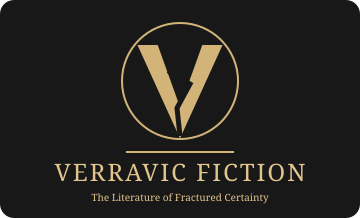

An invitation to writers
Verravism is a founder-led literary movement, not a publisher membership requirement. Writers may use the framework regardless of genre, publisher, location, or career stage. There is no fee, membership application, or certification required to describe your own practice.
A practical path to participation
- Read the manifesto and Five Laws.
- Study the handbook and choose methods appropriate to your story.
- Complete a Belief Ledger and revision diagnostic.
- Ask readers for independent feedback.
- If your work fits the framework, identify it as Verravic Fiction and describe your interpretation of the methods. Attribute the movement to P.M. France.
The Verravic Reader’s Mark

A simplified voluntary book-identification mark. It does not indicate that P.M. France has reviewed, endorsed, certified, or published a book.
Download the Reader’s Mark (SVG)

Use it only to accurately describe a work’s use of the framework; preserve the design, avoid misleading endorsement claims, and do not imply ownership of the movement. This is a proposed usage policy for the movement’s own mark; it is not a registered certification mark.
Community practice
Start a writing circle: share a short scene, record each reader’s independent inference, compare evidence, then discuss which revision best preserves fairness. Use the seven-day challenge in the Writing Lab. Criticism and disagreement are welcome.
Future directory and contributions
A community book directory, guest essays, and moderated submissions are planned resources. No public submission intake, directory approval, or account registration is active on this page yet. Prepare a title, public pen name, genre, short description, methods used, optional fracture level rationale, and public book link. Do not share private legal names or unpublished manuscripts publicly.
Visit the author’s existing reader list for author updates; joining it does not register you as a Verravist.